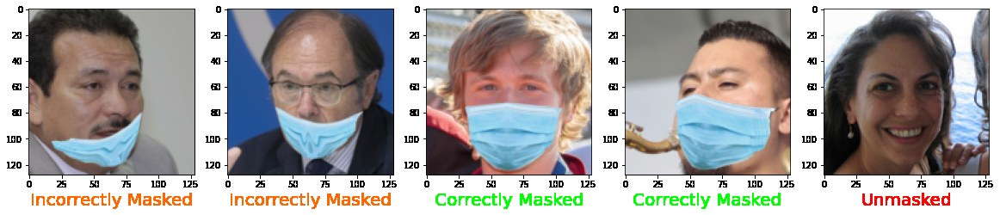
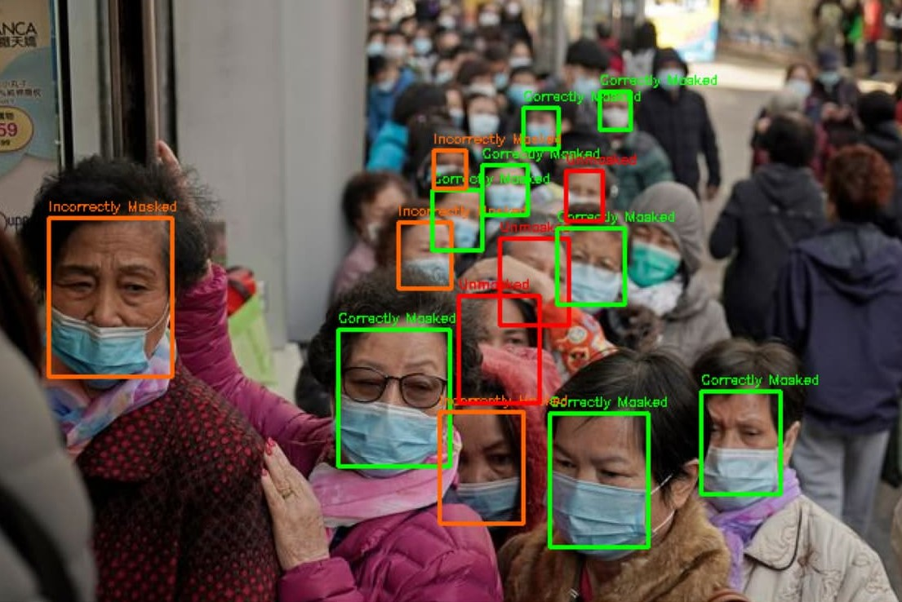

Mask Detection
A model that finds every face in an image or video and labels it as correctly masked, incorrectly masked (for example, nose out), or unmasked, fast enough to run on a live webcam stream.
How it works
Detection is done in two stages:
- Find the faces. An MTCNN face detector locates every face in the frame and crops it to 128×128 pixels.
- Classify each face. An InceptionResnetV1, pretrained for face recognition on VGGFace2, is fine-tuned to sort each crop into one of the three classes. Its box is then drawn in green, orange, or red.
Starting from a network that already knows what faces look like made the classifier converge in just a few epochs.
Data and training
Masks that are worn wrongly are hard to find in real photos, so I used MaskedFace-Net, which has faces with realistic, synthetically added masks that are either correctly or incorrectly worn. Together with unmasked faces, this gave about 17,500 images split almost evenly between the three classes, with 80% used for training and 20% for validation.
To make the model less dependent on the clean, centered dataset images, I augmented the training data with small rotations, horizontal flips, and random changes to color, contrast, and brightness. The network was trained with Adam for 10 epochs, and I kept the checkpoint with the lowest validation loss.
On a separate test set, it reached 99.9% accuracy.

In the wild
The same pipeline works on photos, on videos (processed frame by frame), and on a live webcam stream inside Colab, where the boxes are drawn as a transparent overlay on the video feed.

Real scenes are much harder than the test set. The synthetic masks in the training data all look alike, while real faces are small, turned away, or hidden behind hands and other people. Those are exactly the cases where the model makes most of its mistakes, so the 99.9% should be read as an upper bound.